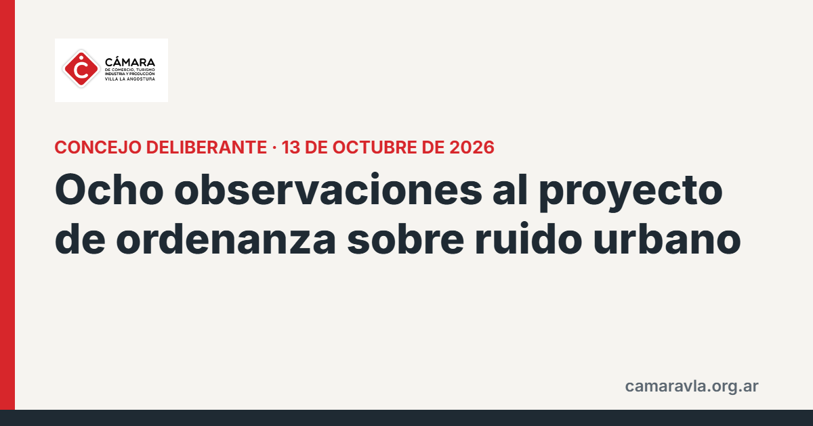

Ocho observaciones al proyecto de ordenanza sobre ruido urbano
La Cámara presentó al Concejo Deliberante una nota con ocho observaciones al proyecto que limita horarios y regula la música en bares y restaurantes. No cuestiona la necesidad de regular los ruidos molestos, sino cómo lo hace el texto.

Entre los puntos planteados: el cierre máximo a las 2 de la madrugada para restaurantes, parrillas, confiterías y cafeterías no contempla la lógica de un destino turístico de temporada; los estudios de impacto acústico completos deberían exigirse solo a los establecimientos de alto impacto o cercanos a zonas sensibles, con declaración jurada y memoria técnica para el resto; las autorizaciones de música amplificada al aire libre deberían renovarse automáticamente para quienes cumplen; y hacen falta plazos máximos de resolución. La Cámara pidió ser convocada a una mesa de trabajo.
Fuente: La Angostura Digital, 13/10/2026
Compartí esta nota: https://camaravla.org.ar/noticias/2026-10-ordenanza-ruido-observaciones